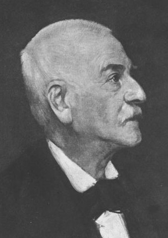
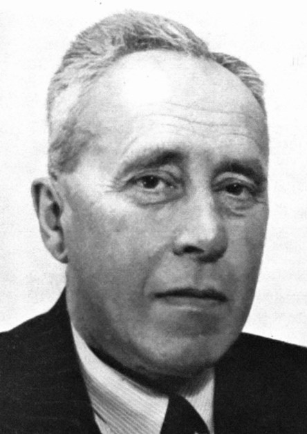
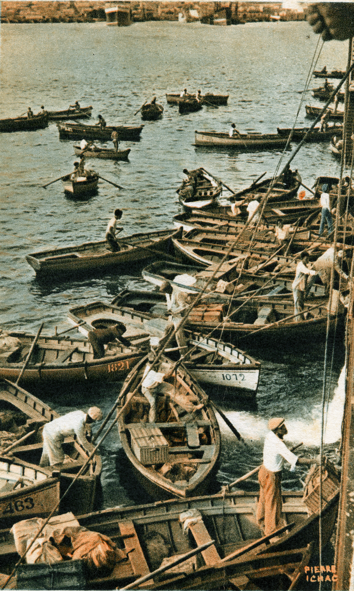

Propuesta para abordar la cultura portuaria en Las Palmas de Gran Canaria
Los cambulloneros

Iván Hernández Cazorla
Preguntas de investigación
- ¿Cómo podemos narrar la historia cultural del cambullonero a través de los diferentes contextos en los que existió su figura?
- ¿Qué fuentes nos permiten construir la historia cultural-marítima Las Palmas de Gran Canaria
- ¿Existen elementos similares en otras ciudades (Funchal) que nos permitan realizar aproximaciones comparativas para desarrollar su historia?
Metodología
Enfoque cultural en el estudio histórico e interdisciplinariedad.
Aproximación teórica
 Conceptos
- Polyphonic history (Burke).
- Lo negro y lo azul (Alice Mah).
Aplicación metodológica
Estudio de la zona geográfica
Perspectiva de los viajeros y viajeras: Olivia Stone y Frances Latimer
Estudio del cambullonero: origen, entorno, aspectos económicos, sociales y culturales
Historia comparativa: cambullonero ― bomboteiro
Conclusiones y resultados
- Camino lleno de obstáculos debido a las fuentes
- Faltan investigaciones con una metodología científica adecuada
- Existen elementos similares: el bombote
- Quedan tareas pendientes para solventar las lagunas existentes: trabajo de campo en los archivos
- ¿Proyecto de memoria digital del cambullón?
Recursos utilizados
Por orden de aparición
- Desconocido, Cambulloneros ofrecen fruta en el Puerto de la Luz. Años 1920-1930. Extraída del Archivo de fotografía histórica de Canarias (AFHC).
- Desconocido, Cambulloneros. Años 1910-1920. Extraído del AFHC.
- Bundesarchiv, Bild 137-063899 / CC-BY-SA 3.0, Bundesarchiv Bild 137-063899, Jakob Burckhardt, recorte por Iván Hernández Cazorla, CC BY-SA 4.0.
- Carl Wilhelm Vollgraff, Johan-huizinga, recorte por Iván Hernández Cazorla, CC BY-SA 4.0.
- Seighean, Professor Peter Burke, recorte por Iván Hernández Cazorla, dominio público.
- Desconocido, Cambulloneros. Años 1920-1930. Extraída del AFHC.
- Rodríguez Bros. (ed), Castillo y Puerto de la Luz. Años 1906-1914. Extraída del AFHC.
- Desconocido, Olivia Stone en el charco de San Ginés de Arrecife de Lanzarote. Años 1885. Extraída del AFHC.
- Desconocido, Bomboteiros. Extraída de madeiraphoto.com.
- Desconocido, Cambulloneros. Extraída de tabernaelcambullon.com.
{kind=link}
{kind=link}
{kind=link}
Presentación realizada con reveal.js (framework JavaScript desarrollado por Hakim El Hattab).
Presentación disponible en GitHub